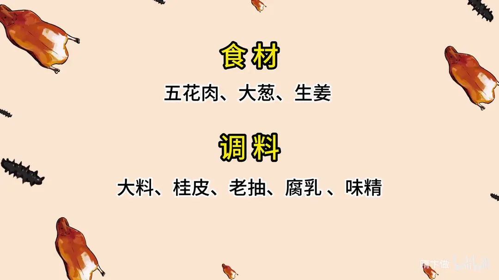
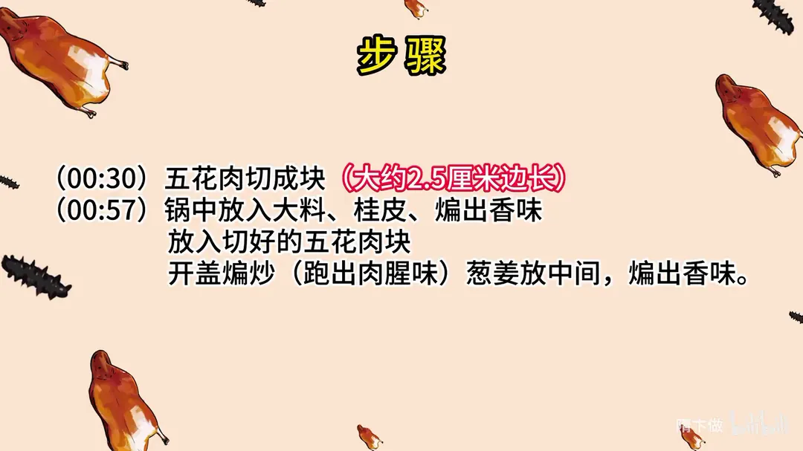
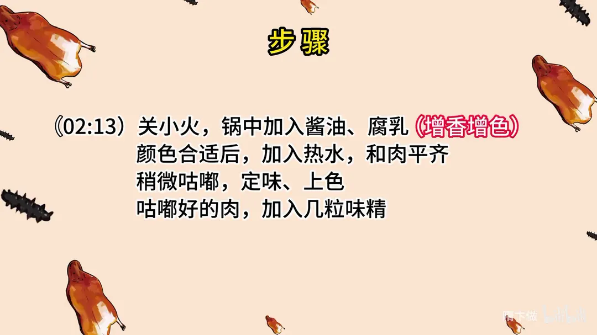
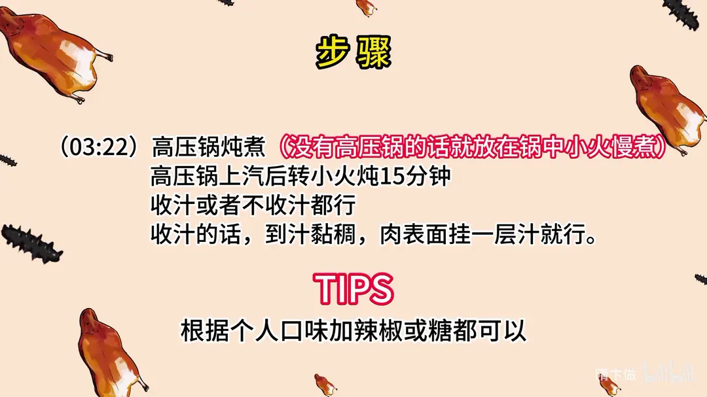

腐乳红烧肉
隋卞一做。五花肉切 2.5 厘米见方的块，大料桂皮煸香后下肉开盖煸炒跑腥味，再用腐乳和老抽上色，高压锅上汽压十五分钟。
原视频：https://www.bilibili.com/video/BV198411S7LW
食材
五花肉、大葱、生姜 等 8 样
| 类别 | 用料 | 用量 |
|---|---|---|
| 主料 | 五花肉 | 适量 |
| 香料 | 大葱 | 适量 |
| 香料 | 生姜 | 适量 |
| 香料 | 大料 | 适量 |
| 香料 | 桂皮 | 适量 |
| 调料 | 老抽 | 适量 |
| 调料 | 腐乳 | 适量 |
| 调料 | 味精 | 适量 |
步骤
- 切块：五花肉切成块，大约 2.5 厘米边长。
- 煸香料：锅中放入大料、桂皮，煸出香味。
- 煸肉：放入切好的五花肉块，开盖煸炒，跑出肉腥味；葱姜放中间，煸出香味。
- 调色定味：关小火，锅中加入酱油、腐乳（增香增色）；颜色合适后加入热水，和肉平齐，稍微咕嘟，定味上色；咕嘟好的肉加入几粒味精。
- 炖煮：高压锅炖煮（没有高压锅就放在锅中中小火慢煮），高压锅上汽后转小火炖 15 分钟。
- 收汁：收汁或者不收汁都行；收汁的话，到汁黏稠、肉表面挂一层汁就行。
小贴士
- 根据个人口味加辣椒或糖都可以。
讲解要点
难度：★★★☆☆（没有炒糖色的活，难点是切肉块、开盖煸掉腥味和高压锅的时间）
为什么这么做
- 只取正经五花：五花肉边上那块去掉，通脊下面那小块也不要，只用这一块正经的五花三层；层次分明的五花炖完才糯，肥瘦不容易脱开。
- 先整块焯水：一个是定型，切出来方正；一个是去腥，血沫打干净再下锅。
- 大料、桂皮先煸香再下肉，全程开盖：肉在油里煸炒，水分和腥味随水汽一起跑掉；盖着锅煸，腥味会闷回肉里。
- 葱姜放在肉中间煸：贴着热油和肉，香味才能被逼出来，又不容易糊。
- 关小火再加酱油、腐乳：腐乳既是主要的咸鲜味，也是上色的来源；火大了酱油和腐乳容易发苦、发焦。
- 一定加热水，加到和肉平齐：冷水会让刚煸紧的肉骤然收缩、变柴；水齐肉面，味才不淡。
- 高压锅上汽后转小火 15 分钟：上汽后火大，汤很快就熬干；转小火保持压力，肉才软而不散。
- 收汁只收到汤汁黏稠、肉上挂一层：收得太干，肉表面发紧发黑，甜咸味也被浓缩得发苦。
容易翻车
- 切 2.5 厘米左右的块，块太小炖完就缩没了，吃着也不够过瘾。
- 桂皮一多就压过腐乳的香味，一小块就够了。
- 加酱油后颜色一合适就赶紧加水，多炒一会儿就有焦糊味。
- 高压锅上汽后忘了转小火，十五分钟不到汤就干了。
- 收汁时汁的颜色是深枣红，颜色发黑发暗说明已经收过头。
原片尾卡




原片文案
AI 字幕校准稿
今天就教你们一个腐乳红烧肉，甜咸口，跟一般的还不太一样，这个汁就是咸里头带一点甜。
一直有国外的同学说，在国外买的猪肉特别地腥，如果腥的话，用大量的葱姜水去泡一泡，把异味全都漂干净了，应该就没事了。
猪五花肉，把边上那块去掉，猪通脊下面那小块就不要了，做红烧肉只用这一块正经的五花三层。
锅里边放上干净水，葱姜放进去，放上三个大料瓣，来上一块桂皮——桂皮千万不能放多。把肉放里面煮，这个步骤有两个目的：一个是定型，一个是去腥。看看有没有血沫，有血沫的话把血沫打了，把盖盖上，中火煮上一会儿。到时间了，都冒香味了，可以了。
煮好的肉切一刀，自己在家吃，不用切得太小，切得稍微大一点，吃着过瘾，大约 2.5 厘米的块。切好之后炖红烧肉：锅洗干净，里边放上底油，不容易粘锅。放入腐乳，腐乳既是增香也是增色，稍微炒一下，把那个香味炒出来。
然后把切好的五花肉块倒进去煸炒。因为煮过的肉表皮水分很多，煸炒的同时先失去水分，再让腐乳的味道慢慢渗进去。两个大料、一块桂皮、葱姜都可以放进去了，然后加入酱油——一般说酱油都是指的生抽。这会儿加酱油，它会跟腐乳的味道融合到一块，就没有焦糊味了。加酱油这一步，零几年的时候做出来的红烧肉教程味道很重很重，后来我就改了：煸肉的同时把酱油放进去，这里面的焦糖色的味道就没有那么重了。
然后加水了，这个一定要加热水。颜色合适之后稍微咕嘟一下，定味上色。这会儿加几粒味精，然后倒进高压锅。上气之后关中火压 15 分钟。
如果家里人不着急吃，咱们多泡一会儿，泡半天，把味道全泡进去。其实酒店也这样，做好了之后也得放一夜，第二天走菜的时候再一起加热，一收汁就可以上了。
我们要把里面的葱姜、大料都捡出来，你要不捡出来，一收汁全碎了。把肉倒到锅里面收汁，尽量不要让它皮朝下，皮朝下容易扒锅。一直大火收汁，把汁熬到黏稠，看这个肉挂上汁了、肉上有色了，红的，就关火，装盘。
肉一进嘴里就化掉了，肥肉是特别浓郁的脂肪的香味，回口有一点点腐乳那种特殊发酵的咸香。这个肉我拿起来一块给你们看，它是透明的、透亮了。简单好做，家里人所有调料都有，试起来吧。